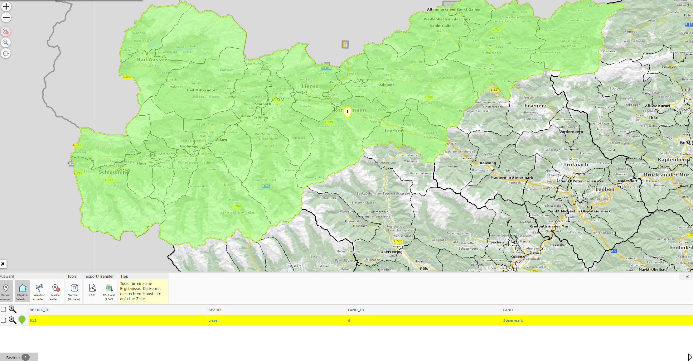
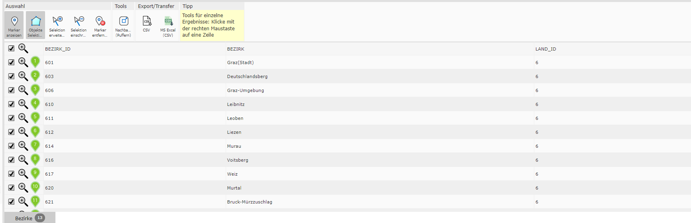
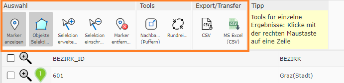
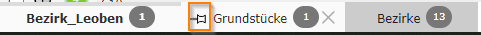

Ergebnisse im Desktop-Layout
Die Ergebnis-Tabelle im Desktop-Layout unterscheidet sich geringfügig von der Tabelle im Mobile-Layout.
Detailergebnisse
Die Tabelle für Detailergebnisse wird gleich dargestellt, wie wenn man sich mehrere Ergebnisse als Tabelle anzeigen lässt.
Ergebnisliste
{kind=link}
Tabellen-Werkzeuge
In den Tabellen stehen folgende Tabellen-Werkzeuge zur Verfügung:
Die Funktionen der Tabellen-Werkzeuge sind ident mit denen im Mobile-Layout.
Selektiert man in einer Tabelle mit mehreren Ergebnissen Einträge, so kommen zwei Tabellen-Werkzeuge hinzu. Diese dazu dienen, entweder die nicht ausgewählten Ergebnisse zu entfernen oder das selektierte Ergebnis aus der Liste zu löschen.


Tabellen-Tabs
Ein weiterer Unterschied zum Mobile-Layout ist das Vorhandensein von Tabs. Je Abfragethema öffnet sich ein Tab. Rechts von der Tab-Bezeichnung steht die Anzahl der Ergebnisse.

Fragt man ein Thema ein weiteres mal ab, wird der zuvor bereitgestellte Tab durch das aktualisierte Abfrageergebnis ersetzt. Wie man das Schließen von bereits geöffneten Tabellen durch Neuabfrage verhindert, wird im nächsten Unterkapitel beschrieben.
Ergebnisse Verlauf
Den klassischen Verlauf, wie beim Mobile-Layout, gibt es im Desktop-Layout nicht. Dafür ist es möglich, die Tabs anzupinnen. Hierfür muss auf das Stecknadelsymbol links von der Bezeichnung geklickt werden.
Danach muss in das Bezeichnungsfeld eine individuelle Beschreibung eingetragen werden.
Durch das Anpinnen gehen diese Ergebnisse nicht verloren. Außerdem ist es möglich, dass beim Karte teilen die Tabelle ebenfalls mit geteilt wird.